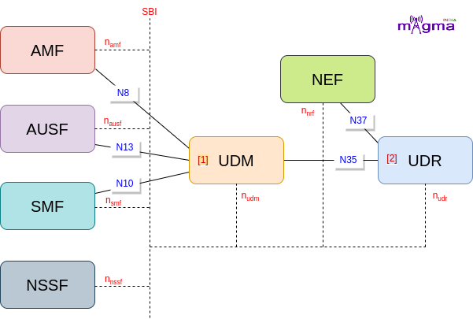

Unified Data Management and Unified Data Repository¶
UDM [1]¶
UDM(Unified Data Management) is a front-end part of the UDR which makes subscription-related data available to the different network functions at their request. It supplies the information to the network functions such as AMF, AUSF, SMF, etc. It is similar to HSS in 4G. The functions of HSS in the 5G system are split into AUSF and UDM. UDM doesn’t serve policy-related context to the PCF as PCF communicates directly to the UDR for its data.
UDR [2]¶
UDR(Unified Data Repository) is the network function that acts as a database for the 5GS(5G System). It mainly stores 4 different subscription-related information: subscription data, policy data, structured data for exposure, and application data. The subscription data is available via UDM(Unified Data Management) which acts as a front-end and serves essential services to the different network functions on request. All the network functions use UDR to store their relative data and retrieve them through request messages.
Data Management¶
Register Context¶
Before the registration procedure is carried out by the UE, all the network functions need to be registered with the NRF to get located by the network functions which require their services. After the registration of NFs, each NF has to register all data with the UDR. But not all the functions directly communicate with the UDR, some main NFs interact with the UDM for their data registration. UDM acts as an intermediary between NFs and UDR.
UDM and UDR play an important role in authentication and authorization. It stores and generates different authentication parameters and creates authentication status which describes at what stage the authentication procedure resides. Then, the AUSF subscribed to the Authentication updates so that it does not have to request each time for any change in the parameters or any data add-ups.
AMF then requests for the Access Management(AM) subscription data from the UDM, which requests to the UDR. AMF also requests the Subscriber data for the identification of the subscriber in the network and subscribed for further updates. And also send update requests of SDM(Subscriber Data Management) on modification.
[4] UDM config support features
[1] Handle create AMF context
[1] Handle query AMF context
[3] Handle generate authentication data request
[2] Generate AUTN
[2] Generate KDF
[2] Derive Kseaf
[2] Derive Kausf
[2] Derive Kamf
[2] Derive Knas
[2] Derive Kgnb
[2] Derive Kasme (Key Access Security Management Entity)
[2] Generate vector
[2] Derive SQN MS
[3] Response data(ausf)
[3] Handle confirm Authentication(udr)
[1] Handle create authentication status
[1] Handle query authentication status
[1] handle modify authentication subscription
[1] handle read authentication subscription
[3] Handle Access Mobility subscription data request
[1] Handle query SDM subscription
[1] Handle create SDM subscription
[1] Handle query SD subscription
[1] Handle Update SDM subscription
Deregistration of functions¶
NSSF retrieves network slicing subscription data from the UDM via SBI(Service-based Interface). As AMF registered with the NRF before storing its data inside the UDR, similarly SMF carried out the same procedure and registered the data along with its non-3gpp context with the network. And on the requirement, SMF retrieves all of its data.
On the deregistration procedure, all the session context and the subscription-related data are removed from the UDR. The authentication-related parameters and status update algorithm are also deleted in this process.
[3] Handle slice selection subscription data retrieval
[1] Handle query SMF registration
[1] Handle query SMF registration list
[1] Handle create SMF context non-3gpp
[1] Handle query SM data
[1] Handle query SMF select data
[3] Handle session management subscription data retrieval
[3] Handle subscription creation
[1] Handle delete SMF context
[1] Handle remove SDM subscription
[3] Handle delete authentication
[1] Handle delete authentication status